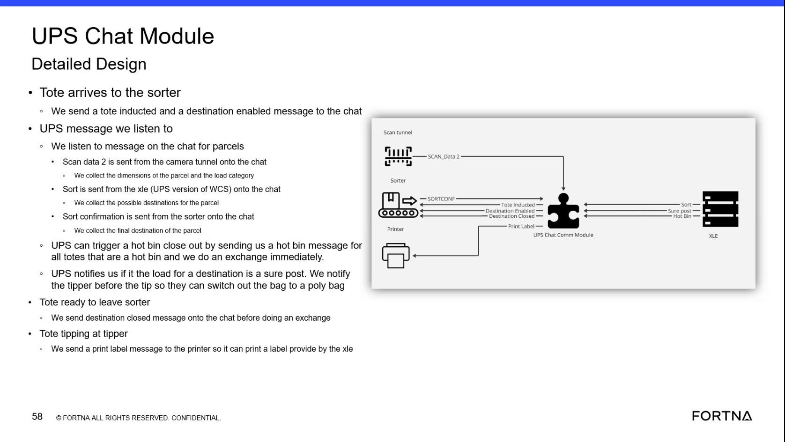

| Procedure ID | proc_verify_robotics_module_agv_state_machine_generates_geek_plus_commands_from_tote_tasks_v1 |
|---|---|
| Title | Verify Robotics module AGV state machine generates Geek Plus execution commands from Sorter Sweeper tote tasks |
| Procedure Type | diagnostic |
| Primary Role | L2_support |
| Support Safe | Yes |
| Capability Tags | agv_active_errors |
| Access Surface | wcs_api, wcs_sql |
| Audience Roles | L2_support |
| Failure Pattern Tags | api_unresponsive, robot_task_or_command_stuck |
| Validation Status | needs_sme_review |
| Merge Status | source_finalized |
Validate the handoff from Sorter Sweeper tote tasks to the Robotics module’s AGV state machine and confirm that the Robotics module generates Geek Plus execution commands for the documented AGV task set (induct tote, remove tote, initialize AGV, go to, pick up tote, move tote, drop off tote, cancel request, go charge).
Use when you need to confirm that tote tasks created by Sorter Sweeper are received by the Robotics module (AGV state machine) and that the Robotics module generates Geek Plus execution commands matching the expected AGV command/task names.

Responsible role: L2_support
Instruction:
On the live OptiSweep/WCS/Robotics command-generation evidence you have access to, confirm that the Robotics module is the component responsible for acting as the AGV state machine that receives tote tasks from Sorter Sweeper and generates commands for Geek Plus to execute.
Expected result:
You can observe that tote tasks originating from Sorter Sweeper are handled by the Robotics module as the AGV state machine, and that Geek Plus execution commands are produced from those tote tasks.
Stop or Escalate If:
Responsible role: L2_support
Instruction:
Using the live evidence you have access to for Robotics module command generation and/or Robotics-side task/command tracking, verify that tote tasks created by Sorter Sweeper are present/consumed by the Robotics module.
Expected result:
For the relevant tote tasks, Robotics module shows corresponding command-generation activity (or command records) that indicate it received/processed those tote tasks.
Stop or Escalate If:
Responsible role: L2_support
Instruction:
For the relevant tote tasks, verify that the Robotics module generates Geek Plus execution commands corresponding to the documented AGV task set: induct tote, remove tote, initialize AGV, go to, pick up tote, move tote, drop off tote, cancel request, go charge.
Expected result:
Support can confirm that for the relevant tote tasks, the Robotics module produces Geek Plus execution commands corresponding to the documented AGV task set.
Stop or Escalate If: